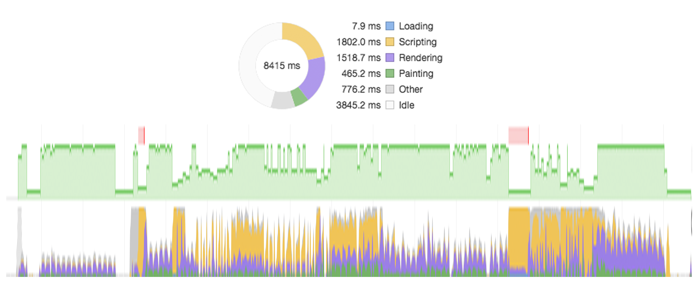

Reducing Web Application Friction
Making Web Apps Buttery Smooth
Desert Code Camp 2018
New Presentation... Who Dis?
John Martin / Twitter: @johndavidfive / Github: @gitsome
- UX Developer @ Unicon ( We're Hiring! )
- Machine Learning / Graph Databases / AWS
- Got my start on the Ti-82 Calculator
What We Will Cover
- Define "buttery smooth app"
- How to measure and improve smoothness
- Drizzle some butter on a sample app
When Is a Web App Buttery Smooth?
It Starts With the First Load
- FP: First Paint
- FCP: First Contentful Paint
- TTI: Time to Interactive
It Continues AFTER First Load
- FPONV: First Paint On Next View
- FCPONV: First Contentful Paint On Next View
- TTIONV: Time to Interactive On Next View
SMOOTH ( Subjective )
Users say experience "feels smooth"
( you know it when you see it )
Smooth vs NOT Smooth
Smooth
NOT Smooth
Smooth
NOT Smooth
SMOOTH ( Objective )
Users experience minimal friction
Friction is anything that impedes a user
Static vs Transitional
Transitional Friction
What is it?
Perceived Delay after User Interaction
- Delayed hover response
- Delayed click response
Perceived JANK during a Transition
- JANKY scrolling
- JANKY animations
- Incoherent / gratuitous animations
Definition of JANKY?
- Of extremely poor or unreliable quality
- Slow or inconsistent frame rate
Transitional Friction
Why Should We Care?
Is This a Case of Pre-Optimization?
We should forget about small efficiencies, say about 97% of the time: premature optimization is the root of all evil. Yet we should not pass up our opportunities in that critical 3%. -- Donald Knuth
-- Donald Knuth
User Experience Basics
- 100 ms the system is reacting instantaneously
- 1000 ms user's flow of thought uninterrupted
- 10 seconds keep attention on a task
( https://www.nngroup.com/articles/response-times-3-important-limits/ )
User Expectations Have Risen
- Users expect 60 Hz during transitions
- 200 Hz seems to be the human limit
- Simon Cooke: 84 Hz retina fluctuations
- Diminishing returns at about 60 Hz
- Apple has "ProMotion" devices @ 120 Hz
Trust / Confidence
- Inconsistency or JANK lowers user confidence
Lastly, It Can Be an Easy Win
- A few approaches are simple to identify and fix
- You can form good habits ( think a11y )
- It's deeply satisfying
Is This a Case of Pre-Optimization?
- It's more of a best practice
Measuring Transitional Friction
Visual Inspection
Click around! ( user testing )
- Lack of responsiveness
- Transition JANK
- JANK Scrolling
- Anything odd...
Chrome Developer Tools
Record a perf snapshot!

Chrome Developer Tools
Can you spot bad frame rate?
User interaction lag?
Fixing Transitional Friction
What Causes Slow Frame Rate and Interaction Lag?
Intro to the "Pixel Pipeline"
How the browser works is important

Pipeline Bottlenecks
- Scripting ( slow code )
- Style Calc ( many changes / heavy CSS / large DOM )
- Layout ( complex layouts / large DOM )
- Paint ( many elements, large images )
- Composite ( many many many layers )
Drizzle Butter Demo
- Scroll
- Check Facet Filter
- User Search
- Open User Profile
Demo Repo ( Branch: perf-original )
Profile Time!
PRO TIP: Turn on CPU Throttling / Network Throttling to test mobile devices / slower computers.
Analysis
- Slow during facet filtering
- Slow during name search
- Really JANKY during scroll
- Viewing user details not terrible
Items to Address
- Agregious Scripting Issues
- Bad Design
- Scrolling Issues
- Animation Issues
- Advanced Scripting Methods
Scripting Pass One
Analysis
- Slow during facet filtering
- Slow during name search
- Really JANKY during scroll
- Viewing user details decent
- Interactions requiring digests better!
Scripting Pass Two
Profile Time!
Analysis
- Faster during filtering
- Faster during search
- Much better during scroll
- Viewing user details decent
Scrolling Checks
- Dev Tools Scroll Performance
- Check Painting during scroll
Scrolling Fixes
- Remove touch handlers (for mobile)
- Possibly move elements into their own layers
Scrolling Fixes
will-change: transform;- or -
transform: translate3d(0,0,0);Scrolling Fixes
Analysis
- Faster during filtering
- Faster during search
- Scrolling is BUTTERY
- Viewing user details decent
User Details Transition
Profile Time!
(check painting)
Animation Tips
- DO NOT animate properties that effect layout
- Avoid properties that effect paint
- DO animate properties that do not effect layout or paint
Composite Only Props
- Opacity
- Transform
Fixing Rendering
Profile Time!
(check painting)
Fixing Painting
Profile Time!
(check painting)
Analysis
- Faster during filtering
- Faster during search
- Scrolling is BUTTERY
- Viewing user details BUTTERY
Can We Do Anything Else?
How can we get rid of the RED?
Web Workers
Enables multi-threading in the browser.
Better Algorithms
- Quad Trees / Oct Trees
- Grid Search
- Improve the Big O
Chunking
Cycle based computation. Should include a "flush" strategy.
ASM JS
Pre-compiled byte code... ultra fast...
Quiz
What were the 5 things we looked at to improve Transitional Friction?
References
Other Resources
Sage Advice
Be PROACTIVE not reactive.
Industry Leaders
- Follow Paul Lewis
- Follow Paul Irish
- Follow Sam Saccone
- Goto Chome Dev Summit